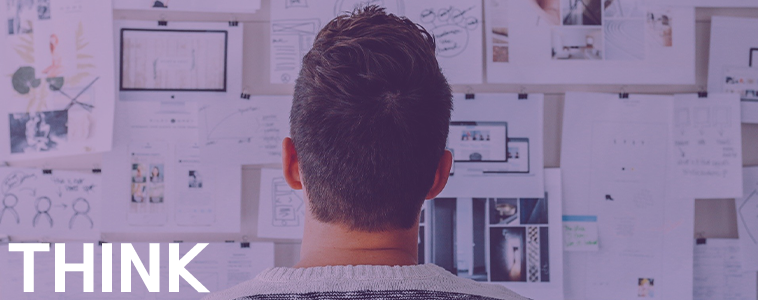
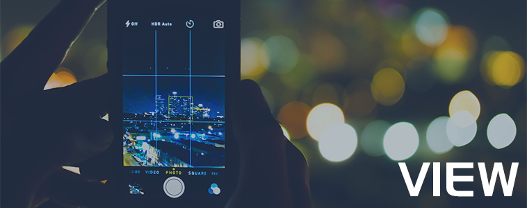
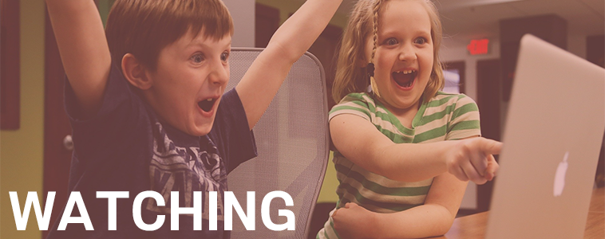

|
사건의 원인과 결과에 대해 생각하는 것을 좋아한다.
일의 진행 순서를 파악하고 차례대로 진행한다. 미리 세부적인 계획을 세워 그대로 실행한다. 위와 같은 성격이 컴퓨터, 소프트웨어 분야에 잘 맞다고 생각해 전공을 정하게 되었다. |
 |
|  |
시각적인 요소에 관심이 많다.
고등학교 시절 학교 컨텐츠에 관한 관심을 개발하고자 방송부에 들어갔는데, 사진, 영상 분야에 더 관심을 갖게 되었다. 편집 프로그램을 독학하고 있다. |
|
영화보기를 좋아한다.
아주 유치하고 뻔한 내용만 아니면 거르지 않고 골고루 본다. 마블 제작사의 영화나 시원시원한 액션으로 스릴넘치는 영화를 좋아한다. |
 |